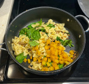

back
Fall Harvest Pasta Recipe
next
Ingredients:
1/2 cup of finely chopped onions
3 minced cloves of garlic
2 tsp of powdered sage
1 cup of butternut squash
1/2 lb Italian sausage
2 cups of bow-tie pasta
3 cups of fresh spinach
1/4 cup of grated Parmesan
extra virgin olive oil
Tip:
This recipe makes 2 servings. If you would like to make more, just double all of the ingredients quantities!
